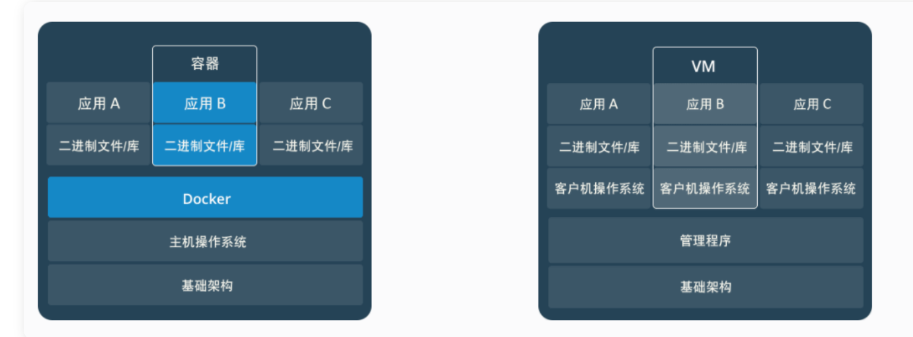
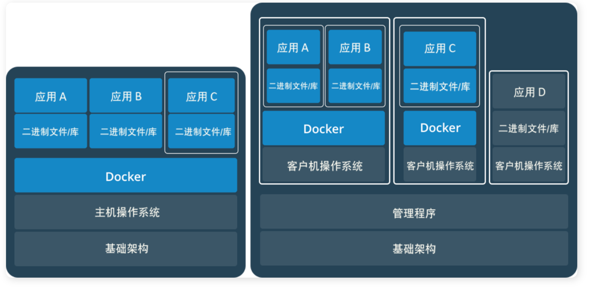

🏠一 认识容器什么是容器?先来看看容器较为官方的解释再来看看容器较为通俗的解释二 再来谈谈 Docker 的一些概念2.1 什么是 Docker?2.2 Docker 思想2.3 Docker 容器的特点2.4 为什么要用 Docker ?三 容器 VS 虚拟机3.1 两者对比图3.2 容器与虚拟机总结3.3 容器与虚拟机两者是可以共存的四 Docker 基本概念4.1 镜像(Image):一个特殊的文件系统4.2 容器(Container):镜像运行时的实体4.3 仓库(Repository):集中存放镜像文件的地方五 常见命令5.1 基本命令5.2 拉取镜像5.3 删除镜像六 简单了解一下 Docker 底层原理7.1 虚拟化技术7.2 Docker 基于 LXC 虚拟容器技术
Docker 是世界领先的软件容器平台，所以想要搞懂 Docker 的概念我们必须先从容器开始说起。
一句话概括容器：容器就是将软件打包成标准化单元，以用于开发、交付和部署。
容器镜像是轻量的、可执行的独立软件包 ，包含软件运行所需的所有内容：代码、运行时环境、系统工具、系统库和设置。
容器化软件适用于基于 Linux 和 Windows 的应用，在任何环境中都能够始终如一地运行。
容器赋予了软件独立性，使其免受外在环境差异（例如，开发和预演环境的差异）的影响，从而有助于减少团队间在相同基础设施上运行不同软件时的冲突。
如果需要通俗地描述容器的话，我觉得容器就是一个存放东西的地方，就像书包可以装各种文具、衣柜可以放各种衣服、鞋架可以放各种鞋子一样。我们现在所说的容器存放的东西可能更偏向于应用比如网站、程序甚至是系统环境。
容器虚拟化的是操作系统而不是硬件，容器之间是共享同一套操作系统资源的。虚拟机技术是虚拟出一套硬件后，在其上运行一个完整操作系统。因此容器的隔离级别会稍低一些。
Docker 是世界领先的软件容器平台。
Docker 使用 Google 公司推出的 Go 语言 进行开发实现，基于 Linux 内核 提供的 CGroup 功能和 namespace 来实现的，以及 AUFS 类的 UnionFS 等技术，对进程进行封装隔离，属于操作系统层面的虚拟化技术。 由于隔离的进程独立于宿主和其它的隔离的进程，因此也称其为容器。
Docker 能够自动执行重复性任务，例如搭建和配置开发环境，从而解放了开发人员以便他们专注在真正重要的事情上：构建杰出的软件。
用户可以方便地创建和使用容器，把自己的应用放入容器。容器还可以进行版本管理、复制、分享、修改，就像管理普通的代码一样。
集装箱
标准化： ① 运输方式 ② 存储方式 ③ API 接口
隔离
轻量 : 在一台机器上运行的多个 Docker 容器可以共享这台机器的操作系统内核；它们能够迅速启动，只需占用很少的计算和内存资源。镜像是通过文件系统层进行构造的，并共享一些公共文件。这样就能尽量降低磁盘用量，并能更快地下载镜像。
标准 : Docker 容器基于开放式标准，能够在所有主流 Linux 版本、Microsoft Windows 以及包括 VM、裸机服务器和云在内的任何基础设施上运行。
安全 : Docker 赋予应用的隔离性不仅限于彼此隔离，还独立于底层的基础设施。Docker 默认提供最强的隔离，因此应用出现问题，也只是单个容器的问题，而不会波及到整台机器。
Docker 的镜像提供了除内核外完整的运行时环境，确保了应用运行环境一致性，从而不会再出现 “这段代码在我机器上没问题啊” 这类问题；——一致的运行环境
可以做到秒级、甚至毫秒级的启动时间。大大的节约了开发、测试、部署的时间。——更快速的启动时间
避免公用的服务器，资源会容易受到其他用户的影响。——隔离性
善于处理集中爆发的服务器使用压力；——弹性伸缩，快速扩展
可以很轻易的将在一个平台上运行的应用，迁移到另一个平台上，而不用担心运行环境的变化导致应用无法正常运行的情况。——迁移方便
使用 Docker 可以通过定制应用镜像来实现持续集成、持续交付、部署。——持续交付和部署
容器和虚拟机具有相似的资源隔离和分配优势，但功能有所不同，因为容器虚拟化的是操作系统，而不是硬件，因此容器更容易移植，效率也更高。
传统虚拟机技术是虚拟出一套硬件后，在其上运行一个完整操作系统，在该系统上再运行所需应用进程；而容器内的应用进程直接运行于宿主的内核，容器内没有自己的内核，而且也没有进行硬件虚拟。因此容器要比传统虚拟机更为轻便。

容器是一个应用层抽象，用于将代码和依赖资源打包在一起。 多个容器可以在同一台机器上运行，共享操作系统内核，但各自作为独立的进程在用户空间中运行 。与虚拟机相比， 容器占用的空间较少（容器镜像大小通常只有几十兆），瞬间就能完成启动 。
虚拟机 (VM) 是一个物理硬件层抽象，用于将一台服务器变成多台服务器。 管理程序允许多个 VM 在一台机器上运行。每个 VM 都包含一整套操作系统、一个或多个应用、必要的二进制文件和库资源，因此 占用大量空间 。而且 VM 启动也十分缓慢 。
通过 Docker 官网，我们知道了这么多 Docker 的优势，但是大家也没有必要完全否定虚拟机技术，因为两者有不同的使用场景。虚拟机更擅长于彻底隔离整个运行环境。例如，云服务提供商通常采用虚拟机技术隔离不同的用户。而 Docker 通常用于隔离不同的应用 ，例如前端，后端以及数据库。

Docker 中有非常重要的三个基本概念，理解了这三个概念，就理解了 Docker 的整个生命周期。
镜像（Image）
容器（Container）
仓库（Repository）
操作系统分为内核和用户空间。对于 Linux 而言，内核启动后，会挂载 root 文件系统为其提供用户空间支持。而 Docker 镜像（Image），就相当于是一个 root 文件系统。
Docker 镜像是一个特殊的文件系统，除了提供容器运行时所需的程序、库、资源、配置等文件外，还包含了一些为运行时准备的一些配置参数（如匿名卷、环境变量、用户等）。 镜像不包含任何动态数据，其内容在构建之后也不会被改变。
Docker 设计时，就充分利用 Union FS 的技术，将其设计为分层存储的架构 。镜像实际是由多层文件系统联合组成。
镜像构建时，会一层层构建，前一层是后一层的基础。每一层构建完就不会再发生改变，后一层上的任何改变只发生在自己这一层。 比如，删除前一层文件的操作，实际不是真的删除前一层的文件，而是仅在当前层标记为该文件已删除。在最终容器运行的时候，虽然不会看到这个文件，但是实际上该文件会一直跟随镜像。因此，在构建镜像的时候，需要额外小心，每一层尽量只包含该层需要添加的东西，任何额外的东西应该在该层构建结束前清理掉。
分层存储的特征还使得镜像的复用、定制变的更为容易。甚至可以用之前构建好的镜像作为基础层，然后进一步添加新的层，以定制自己所需的内容，构建新的镜像。
镜像（Image）和容器（Container）的关系，就像是面向对象程序设计中的 类 和 实例 一样，镜像是静态的定义，容器是镜像运行时的实体。容器可以被创建、启动、停止、删除、暂停等 。
容器的实质是进程，但与直接在宿主执行的进程不同，容器进程运行于属于自己的独立的 命名空间。前面讲过镜像使用的是分层存储，容器也是如此。
容器存储层的生存周期和容器一样，容器消亡时，容器存储层也随之消亡。因此，任何保存于容器存储层的信息都会随容器删除而丢失。
按照 Docker 最佳实践的要求，容器不应该向其存储层内写入任何数据 ，容器存储层要保持无状态化。所有的文件写入操作，都应该使用数据卷（Volume）、或者绑定宿主目录，在这些位置的读写会跳过容器存储层，直接对宿主(或网络存储)发生读写，其性能和稳定性更高。数据卷的生存周期独立于容器，容器消亡，数据卷不会消亡。因此， 使用数据卷后，容器可以随意删除、重新 run ，数据却不会丢失。
镜像构建完成后，可以很容易的在当前宿主上运行，但是， 如果需要在其它服务器上使用这个镜像，我们就需要一个集中的存储、分发镜像的服务，Docker Registry 就是这样的服务。
一个 Docker Registry 中可以包含多个仓库（Repository）；每个仓库可以包含多个标签（Tag）；每个标签对应一个镜像。所以说：镜像仓库是 Docker 用来集中存放镜像文件的地方类似于我们之前常用的代码仓库。
通常，一个仓库会包含同一个软件不同版本的镜像，而标签就常用于对应该软件的各个版本 。我们可以通过<仓库名>:<标签>的格式来指定具体是这个软件哪个版本的镜像。如果不给出标签，将以 latest 作为默认标签.。
这里补充一下 Docker Registry 公开服务和私有 Docker Registry 的概念：
Docker Registry 公开服务 是开放给用户使用、允许用户管理镜像的 Registry 服务。一般这类公开服务允许用户免费上传、下载公开的镜像，并可能提供收费服务供用户管理私有镜像。
最常使用的 Registry 公开服务是官方的 Docker Hub ，这也是默认的 Registry，并拥有大量的高质量的官方镜像，网址为：https://hub.docker.com/open in new window 。官方是这样介绍 Docker Hub 的：
Docker Hub 是 Docker 官方提供的一项服务，用于与您的团队查找和共享容器镜像
除了使用公开服务外，用户还可以在 本地搭建私有 Docker Registry 。Docker 官方提供了 Docker Registry 镜像，可以直接使用做为私有 Registry 服务。开源的 Docker Registry 镜像只提供了 Docker Registry API 的服务端实现，足以支持 docker 命令，不影响使用。但不包含图形界面，以及镜像维护、用户管理、访问控制等高级功能。
xxxxxxxxxxdocker version # 查看docker版本docker images # 查看所有已下载镜像，等价于：docker image ls 命令docker container ls # 查看所有容器docker ps #查看正在运行的容器docker image prune # 清理临时的、没有被使用的镜像文件。-a, --all: 删除所有没有用的镜像，而不仅仅是临时文件；
xxxxxxxxxxdocker search mysql # 查看mysql相关镜像docker pull mysql:5.7 # 拉取mysql镜像docker image ls # 查看所有已下载镜像比如我们要删除我们下载的 mysql 镜像。
通过 docker rmi [image] （等价于docker image rm [image]）删除镜像之前首先要确保这个镜像没有被容器引用（可以通过标签名称或者镜像 ID 删除）。通过我们前面讲的docker ps命令即可查看。
xxxxxxxxxx➜ ~ docker psCONTAINER ID IMAGE COMMAND CREATED STATUS PORTS NAMESc4cd691d9f80 mysql:5.7 "docker-entrypoint.s…" 7 weeks ago Up 12 days 0.0.0.0:3306->3306/tcp, 33060/tcp mysql
可以看到 mysql 正在被 id 为 c4cd691d9f80 的容器引用，我们需要首先通过 docker stop c4cd691d9f80 或者 docker stop mysql暂停这个容器。
然后查看 mysql 镜像的 id
xxxxxxxxxx➜ ~ docker imagesREPOSITORY TAG IMAGE ID CREATED SIZEmysql 5.7 f6509bac4980 3 months ago 373MB
通过 IMAGE ID 或者 REPOSITORY 名字即可删除
xxxxxxxxxxdocker rmi f6509bac4980 # 或者 docker rmi mysql首先，Docker 容器虚拟化技术为基础的软件，那么什么是虚拟化技术呢？
简单点来说，虚拟化技术可以这样定义：
虚拟化技术是一种资源管理技术，是将计算机的各种实体资源open in new window)（CPUopen in new window、内存open in new window、磁盘空间open in new window、网络适配器open in new window等），予以抽象、转换后呈现出来并可供分割、组合为一个或多个电脑配置环境。由此，打破实体结构间的不可切割的障碍，使用户可以比原本的配置更好的方式来应用这些电脑硬件资源。这些资源的新虚拟部分是不受现有资源的架设方式，地域或物理配置所限制。一般所指的虚拟化资源包括计算能力和数据存储。
Docker 技术是基于 LXC（Linux container- Linux 容器）虚拟容器技术的。
LXC，其名称来自 Linux 软件容器（Linux Containers）的缩写，一种操作系统层虚拟化（Operating system–level virtualization）技术，为 Linux 内核容器功能的一个用户空间接口。它将应用软件系统打包成一个软件容器（Container），内含应用软件本身的代码，以及所需要的操作系统核心和库。通过统一的名字空间和共用 API 来分配不同软件容器的可用硬件资源，创造出应用程序的独立沙箱运行环境，使得 Linux 用户可以容易的创建和管理系统或应用容器。
LXC 技术主要是借助 Linux 内核中提供的 CGroup 功能和 namespace 来实现的，通过 LXC 可以为软件提供一个独立的操作系统运行环境。
cgroup 和 namespace 介绍：
namespace 是 Linux 内核用来隔离内核资源的方式。 通过 namespace 可以让一些进程只能看到与自己相关的一部分资源，而另外一些进程也只能看到与它们自己相关的资源，这两拨进程根本就感觉不到对方的存在。具体的实现方式是把一个或多个进程的相关资源指定在同一个 namespace 中。Linux namespaces 是对全局系统资源的一种封装隔离，使得处于不同 namespace 的进程拥有独立的全局系统资源，改变一个 namespace 中的系统资源只会影响当前 namespace 里的进程，对其他 namespace 中的进程没有影响。
（以上关于 namespace 介绍内容来自https://www.cnblogs.com/sparkdev/p/9365405.htmlopen in new window ，更多关于 namespace 的内容可以查看这篇文章 ）。
CGroup 是 Control Groups 的缩写，是 Linux 内核提供的一种可以限制、记录、隔离进程组 (process groups) 所使用的物理资源 (如 cpu memory i/o 等等) 的机制。
（以上关于 CGroup 介绍内容来自 https://www.ibm.com/developerworks/cn/linux/1506_cgroup/index.htmlopen in new window ，更多关于 CGroup 的内容可以查看这篇文章 ）。